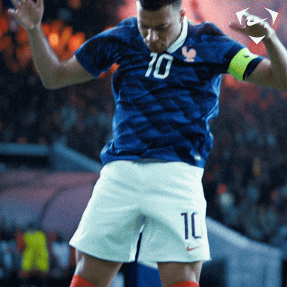

Benvenuti nel mio sito dove parlo di calcio e sport!
La UEFA Champions League nasce nel 1955 con il nome di Coppa dei Campioni, un'idea del quotidiano francese L'Equipe per far sfidare i club vincitori dei rispettivi campionati nazionali in un torneo a eliminazione diretta. La grande trasformazione avviene nel 1992, quando la competizione assume il nome attuale, introduce il celebre inno in tre lingue e apre le porte anche alle squadre non vincitrici dei campionati piu' importanti, fino ad arrivare alla storica formula a girone unico introdotta nel 2024.
Erling Haaland: L'attaccante del Manchester City continua a valutare il suo futuro e il Real Madrid rimane la sua destinazione piu' gradita in caso di addio alla Premier League. Anche il Barcellona osserva attentamente la situazione.
Michael Olise: Il Bayern Monaco ha blindato il suo talento francese rispondendo con un secco no agli approcci estivi del Real Madrid.
